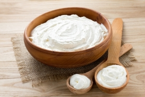

Além de ecologicamente responsável, o hidratante corporal vegano pode ser feito em casa por um preço muito baixo. As receitas são bem simples e os ingredientes são fáceis de encontrar no mercado ou via internet.
As que você vai encontrar aqui que não são derivada de animais, como leite ou mel. Como não levam conservantes, duram cerca de dois meses. Por isso faça pouca quantidade de cada vez.
Ingredientes (em quantidades iguais):
Coloque partes iguais de cada ingrediente numa vasilha, menos o óleo essencial. Derreta todos eles em banho-maria.
Assim que estiverem derretido, tire do fogão e coloque na geladeira por cerca de uma hora, ou até quando ganhar uma consistência cremosa.
Em seguida adicione cinco gotas do óleo essencial escolhido e bata bem.
Esta receita também leva partes iguais de cada ingrediente e possui a força umectante do abacate.
Assim como a fórmula anterior, derreta todos os ingredientes para derreter em banho maria, misturando-os bem. Depois devem ficar na geladeira por cerca de cinco horas, ou até obter consistência.
Se for necessário bata a mistura com batedeira, para ficar mais macia.
Ingredientes:
Derreta a cera de carnaúba em banho-maria e logo depois o óleo de coco. Em terceiro lugar adicione o óleo de amêndoas e misture bem até ficar tudo homogêneo.
Tire do fogão e deixe a mistura esfriar um pouco. Então adicione as gotas de óleo essencial.
Espere que a mistura esfrie para batê-la na batedeira. Vá colocando a água aos poucos enquanto faz isso.